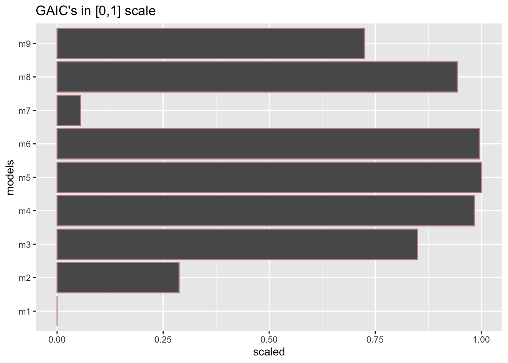
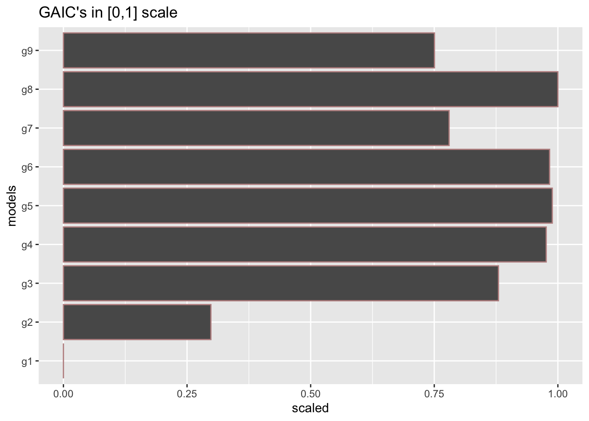
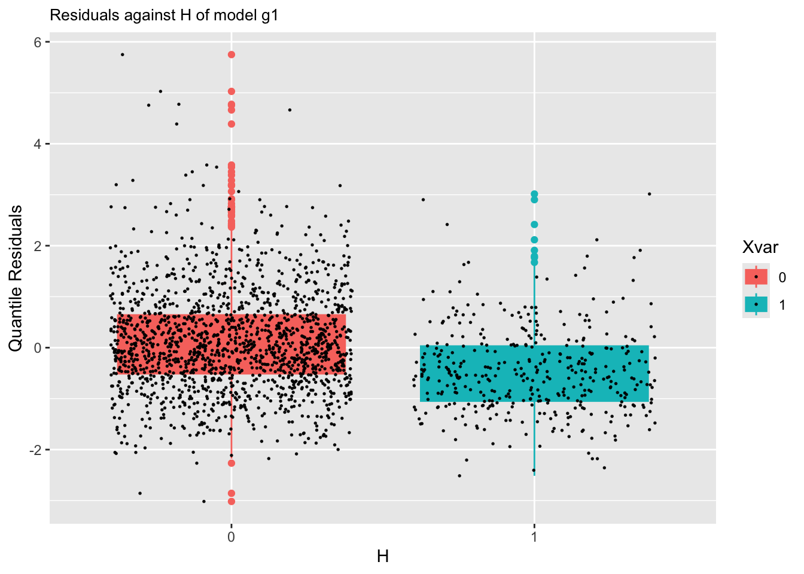
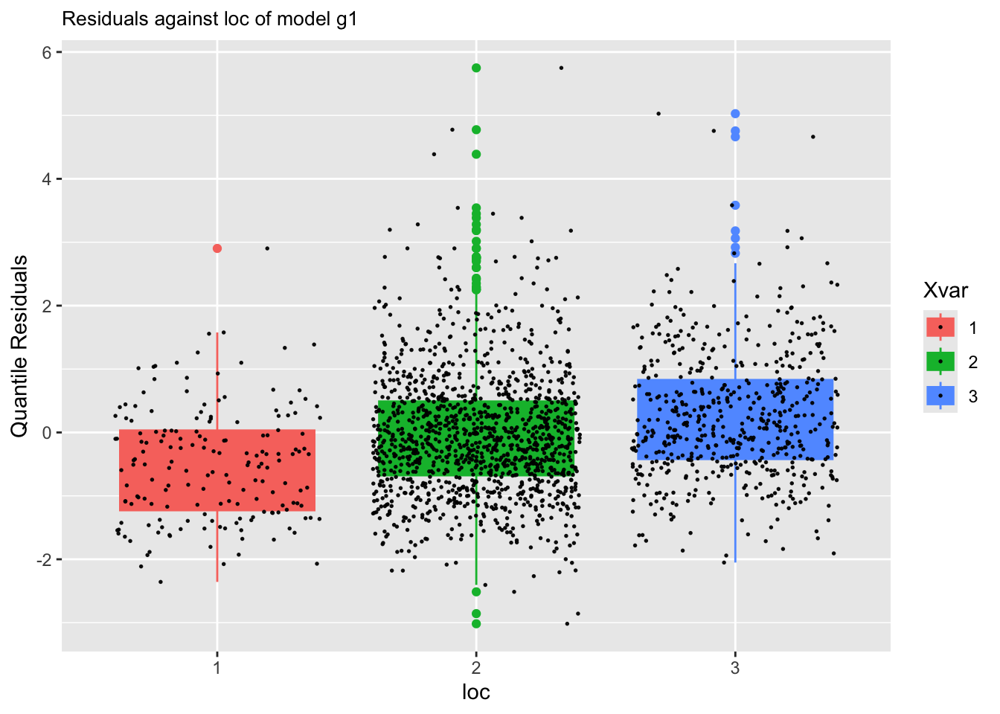
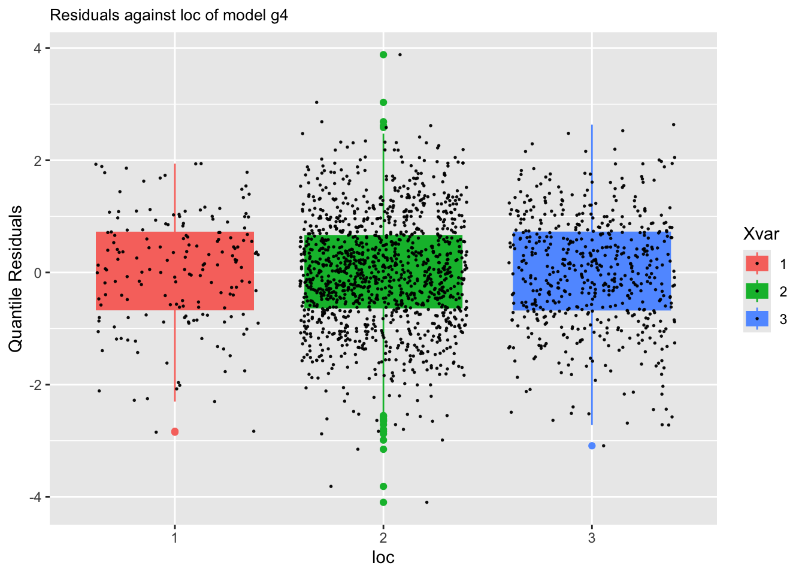

rm(list=ls())
#getRversion()
library(gamlss)
library(gamlss2)
library(ggplot2)
library(gamlss.ggplots)
library("dplyr")
packageVersion("gamlss")[1] '5.4.23'packageVersion("gamlss2")[1] '0.1.0'packageVersion("gamlss.ggplots")[1] '2.1.17'gamlss.ggplotsThis booklet provides an overview of the R package gamlss.ggplots and its functions, focusing on their use and the output they generate.
The gamlss.ggplots package offers a set of ggplot2-based visual tools for diagnostic and exploratory plots specifically tailored for models fitted using gamlss() and gamlss2(). Most of the functions in this package are compatible with both model types, making them broadly useful across the Generalized Additive Models for Location, Scale and Shape framework.
Supported Model Objects
gamlss — the original modeling interface for GAMLSSgamlss2 — a modern interface with cleaner formula syntax and streamlined model handlingThe latest versions of the key packages are:
rm(list=ls())
#getRversion()
library(gamlss)
library(gamlss2)
library(ggplot2)
library(gamlss.ggplots)
library("dplyr")
packageVersion("gamlss")[1] '5.4.23'packageVersion("gamlss2")[1] '0.1.0'packageVersion("gamlss.ggplots")[1] '2.1.17'gamlss.ggplots PackageOriginally, the package gamlss.ggplots included all the functionality currently split between gamlss.ggplots and gamlss.prepdata. Due to maintenance challenges caused by the growing size and complexity of the package, it was divided into two separate components:
- `gamlss.ggplots` — visualization and diagnostics
- `gamlss.prepdata` — data preparation utilitiesAt this stage, gamlss.ggplots is experimental. Some functions are not yet exported (i.e., “hidden”) to allow for further testing and validation. These hidden functions can still be accessed using the triple-colon syntax:
gamlss.ggplots:::function_name()Functions in gamlss.ggplots can be broadly classified into three categories:
Most if the before-fitting a model functions are moved to gamlss.prepdata package but few visualizing distribution families are remaining. Distribution relatated function names begin with family_Name() - Example: family_pdf(NO) which plots the density distribution from the Normal GAMLSS family.
These functions are used after a model has been fitted, providing diagnostics, interpretation aids, and predictions.
Residual-based diagnostics - resid_NAME() – Diagnostics on residuals E.g., resid_wp() produces a worm plot for assessing the distribution.
Fitted value visualizations - fitted_NAME() – Visualizes fitted parameters (\(\mu\), \(\sigma\), etc.) from a fitted model.
Response variable plots resp_NAME() – Plots the response variable against various model-based quantities such as parameters or quantiles.
Model interpretation
pe_NAME() – Plots partial effects to aid model interpretation.influence_NAME() – Shows influence measures of model terms.predict_NAME() – Provides predictions, often using a newdata argument.model_NAME() – Functions for comparing multiple models, typically using diagnostic statistics or GAIC.These functions serve as helpers for data exploration and bootstrap analyses.
Single-vector visualizations • y_NAME() – For example, y_hist(y) plots a histogram, y_acf(y) plots the autocorrelation function.
Bootstrap summaries • boot_NAME() – Plots parameter estimates or fitted values across bootstrap samples.
Function imitations
Some utility functions imitate existing gamlss functions. E.g., histSmo_plot() mimics histSmo() but uses ggplot2.
Because the package is at an experimental stage, some of the functions are hidden to allowed time for checking. The hidden functions can be accessed using gamlss.ggplots:::functionname().
Note future functions that are not included in the package at the moment are:
ale_param() for accumulated local effects of a specific term on the parameter (Mikis)
pd_param() for partial dependants plots of a specific term on the parameter (Mikis)
pe_exceedance() (Julian)
The general GAMLSS model can be written as \[ \begin{split} y_i & \stackrel{\small{ind}}{\sim } \mathcal{D}( \theta_1, \ldots, \theta_k) \nonumber \\ g(\theta_1) &= \mathcal{ML}_1(x_{1i},x_{2i}, \ldots, x_{pi}) \nonumber \\ \ldots &= \ldots \nonumber\\ g(\theta_k) &= \mathcal{ML}_k(x_{1i},x_{2i}, \ldots, x_{pi}). \end{split} \tag{1}\] When only additive smoothing terms are fitted the model can be written; \[\begin{split} y_i & \stackrel{\small{ind}}{\sim } \mathcal{D}( \theta_1, \ldots, \theta_k) \nonumber \\ g(\theta_1) &= b_0 + s_1(x_{1i}) + \cdots, +s_p(x_{pi}) \nonumber\\ \cdots &=& \cdots \nonumber\\ g(\theta_k) &= b_0 + s_1(x_{1i}) + \cdots, +s_p(x_{pi}). \end{split} \tag{2}\]
Here there are no fitted models, and the only requirement are values for the parameters. Note that those function may at a later stage move to gamlss.prepdata.
family_pdf()The function family_pdf() plots individual pdf’s from gamlss.family distribution. It needs the family argument.
family_pdf(NO, from=-5,to=5, mu=0, sigma=c(.5,1,2))
family_pdf(NBI, to=15, mu=1, sigma=c(.5,1,2), alpha=.9, size.seqment = 3)family_pdf(BB, to=15, mu=.5, sigma=c(.5,1,2), alpha=.9, , size.seqment = 3)
family_cdfThe function plots individual cdf’s from gamlss.family distribution. It needs the family argument.
family_cdf(NO, from=-5,to=5, mu=0, sigma=c(.5,1,2))family_cdf(NBI, to=15, mu=1, sigma=c(.5,1,2), alpha=.9, size.seqment = 3)family_cdf(BB, to=15, mu=.5, sigma=c(.5,1,2), alpha=.9, , size.seqment = 3)
family_cor()The function family_cor() provides a crude way of checking the inter correlation of parameters within any gamlss.family distribution. It
generates 10000 values from the specified distribution,
fits the distribution to the generared data and
plots the correlation coefficients of the parameters.
Those correlation coefficients are taken from the fitted variance covariance matrix.
The method only provides an idea of how the correlations between parameters are at specified points of the distribution parameters. At different parameter points the distribution could behave completely different.
#source("~/Dropbox/github/gamlss-ggplots/R/family_cor.R")
gamlss.ggplots:::family_cor("BCTo", mu=1, sigma=0.11, nu=1, tau=5, no.sim=10000)First we fit different GAMLSS models. The models will to be used for demonstration later.
null model using Normal distribution.data(rent)
# Null model
m0<-gamlss(R~1,family=GA,data=rent)GAMLSS-RS iteration 1: Global Deviance = 28611.58
GAMLSS-RS iteration 2: Global Deviance = 28611.58 g0<-gamlss2(R~1,family=GA,data=rent)GAMLSS-RS iteration 1: Global Deviance = 28611.5819 eps = 0.056387
GAMLSS-RS iteration 2: Global Deviance = 28611.5819 eps = 0.000000 Fit additive smooth terms for Fl and A in the \(\mu\) using the Normal distribution.
# Smooth terms for Fl and A in mu, normal
m1<-gamlss(R~pb(Fl)+pb(A),family=NO,data=rent)GAMLSS-RS iteration 1: Global Deviance = 28264.19
GAMLSS-RS iteration 2: Global Deviance = 28264.19 g1<-gamlss2(R~s(Fl)+s(A),family=NO,data=rent)GAMLSS-RS iteration 1: Global Deviance = 28269.3496 eps = 0.024145
GAMLSS-RS iteration 2: Global Deviance = 28265.5187 eps = 0.000135
GAMLSS-RS iteration 3: Global Deviance = 28265.5116 eps = 0.000000 Fit additive smooth terms for Fl and A and main effects for H and loc in the \(\mu\) using the Normal distribution.
m2<-gamlss(R~pb(Fl)+pb(A)+H+loc, family=NO, data=rent)GAMLSS-RS iteration 1: Global Deviance = 28062.62
GAMLSS-RS iteration 2: Global Deviance = 28062.62 g2<-gamlss2(R~s(Fl)+s(A)+H+loc, family=NO, data=rent)GAMLSS-RS iteration 1: Global Deviance = 28067.7199 eps = 0.031106
GAMLSS-RS iteration 2: Global Deviance = 28063.5704 eps = 0.000147
GAMLSS-RS iteration 3: Global Deviance = 28063.5654 eps = 0.000000 Fit additive smooth terms for Fl and A and main effects for H and loc in the \(\mu\) using Gamma distribution.
# Smooth terms for Fl and A main effects for H and loc in mu, gamma
m3<-gamlss(R~pb(Fl)+pb(A)+H+loc,family=GA,data=rent)GAMLSS-RS iteration 1: Global Deviance = 27683.22
GAMLSS-RS iteration 2: Global Deviance = 27683.22
GAMLSS-RS iteration 3: Global Deviance = 27683.22 g3<-gamlss2(R~s(Fl)+s(A)+H+loc,family=GA,data=rent)GAMLSS-RS iteration 1: Global Deviance = 27693.1246 eps = 0.086677
GAMLSS-RS iteration 2: Global Deviance = 27686.3102 eps = 0.000246
GAMLSS-RS iteration 3: Global Deviance = 27686.309 eps = 0.000000 Fit additive smooth terms for Fl and A and main effects for H and loc in both \(\mu\) and \(\sigma\) parameters using Gamma distribution.
m4<-gamlss(R~pb(Fl)+pb(A)+H+loc, sigma.fo=~pb(Fl)+pb(A)+H+loc,
family=GA,data=rent)GAMLSS-RS iteration 1: Global Deviance = 27572.14
GAMLSS-RS iteration 2: Global Deviance = 27570.29
GAMLSS-RS iteration 3: Global Deviance = 27570.28
GAMLSS-RS iteration 4: Global Deviance = 27570.28 g4<-gamlss2(R~s(Fl)+s(A)+H+loc, sigma.fo=~s(Fl)+s(A)+H+loc,
family=GA,data=rent)GAMLSS-RS iteration 1: Global Deviance = 27621.6847 eps = 0.089033
GAMLSS-RS iteration 2: Global Deviance = 27613.1786 eps = 0.000307
GAMLSS-RS iteration 3: Global Deviance = 27613.1728 eps = 0.000000 s() and the gamma distribution.We bring the package gamlss.add for extra smoothers
library(gamlss.add)Fit interaction smooth terms for Fl and A in \(\mu\), additive main smooth effect for for Fl and A in \(\sigma\) and main effects for H and loc in both \(\mu\) and \(\sigma\) using a gamma family.
m5<-gamlss(R~ga(~s(Fl, A))+H+loc, sigma.fo=~pb(Fl)+pb(A)+H+loc,
family=GA,data=rent)GAMLSS-RS iteration 1: Global Deviance = 27542.45
GAMLSS-RS iteration 2: Global Deviance = 27537.5
GAMLSS-RS iteration 3: Global Deviance = 27537.41
GAMLSS-RS iteration 4: Global Deviance = 27537.41 g5<-gamlss2(R~s(Fl, A)+H+loc, sigma.fo=~s(Fl)+s(A)+H+loc,
family=GA,data=rent)GAMLSS-RS iteration 1: Global Deviance = 27654.2449 eps = 0.087960
GAMLSS-RS iteration 2: Global Deviance = 27584.1109 eps = 0.002536
GAMLSS-RS iteration 3: Global Deviance = 27584.0985 eps = 0.000000 Fit interaction smooth terms for Fl and A, interaction for H and loc in \(\mu\) and and main effects only in \(\sigma\) using a gamma family.
m6<-gamlss(R~ga(~s(Fl, A))+H*loc, sigma.fo=~pb(Fl)+pb(A)+H+loc,
family=GA,data=rent)GAMLSS-RS iteration 1: Global Deviance = 27541.97
GAMLSS-RS iteration 2: Global Deviance = 27536.41
GAMLSS-RS iteration 3: Global Deviance = 27536.29
GAMLSS-RS iteration 4: Global Deviance = 27536.29
GAMLSS-RS iteration 5: Global Deviance = 27536.29 g6<-gamlss2(R~s(Fl, A)+H*loc, sigma.fo=~s(Fl)+s(A)+H+loc,
family=GA,data=rent)GAMLSS-RS iteration 1: Global Deviance = 27654.5301 eps = 0.087950
GAMLSS-RS iteration 2: Global Deviance = 27583.6533 eps = 0.002562
GAMLSS-RS iteration 3: Global Deviance = 27583.6377 eps = 0.000000 Fit a penalised varying coefficient model (a simpler form of smoothing in two dimensions that s(Fl, A)) in \(\mu\). Additive main smooth effect for for Fl and A in \(\sigma\) and main effects for H and loc in both \(\mu\) and \(\sigma\) using a gamma family.
m7<-gamlss(R~pvc(Fl, by=A)+H+loc, sigma.fo=~pb(Fl)+pb(A)+H+loc,
family=GA,data=rent)GAMLSS-RS iteration 1: Global Deviance = 28221.47
GAMLSS-RS iteration 2: Global Deviance = 28203.83
GAMLSS-RS iteration 3: Global Deviance = 28201.49
GAMLSS-RS iteration 4: Global Deviance = 28201.05
GAMLSS-RS iteration 5: Global Deviance = 28200.94
GAMLSS-RS iteration 6: Global Deviance = 28200.92
GAMLSS-RS iteration 7: Global Deviance = 28200.91
GAMLSS-RS iteration 8: Global Deviance = 28200.9
GAMLSS-RS iteration 9: Global Deviance = 28200.9 g7<-gamlss2(R~s(Fl,by=A)+H+loc, sigma.fo=~s(Fl)+s(A)+H+loc,
family=GA,data=rent)GAMLSS-RS iteration 1: Global Deviance = 27732.5053 eps = 0.085379
GAMLSS-RS iteration 2: Global Deviance = 27731.6923 eps = 0.000029
GAMLSS-RS iteration 3: Global Deviance = 27731.6805 eps = 0.000000 Fit Neural networks for Fl, A, H, and loc for both \(\mu\) and \(\sigma\) # gamma family
m8<-gamlss(R~nn(~Fl+A+H+loc, size = 10,
decay = 0.01, maxit = 100),
sigma.fo=~nn(~Fl+A+H+loc, decay = 0.01),
family=GA,data=rent)GAMLSS-RS iteration 1: Global Deviance = 27574.91
GAMLSS-RS iteration 2: Global Deviance = 27473.94
GAMLSS-RS iteration 3: Global Deviance = 27471.27
GAMLSS-RS iteration 4: Global Deviance = 27471.27 g8<-gamlss2(R~n(~Fl+A+H+loc, size = 10, decay = 0.01),
sigma.fo=~n(~Fl+A+H+loc, size = 3,decay = 0.01),
family=GA,data=rent)GAMLSS-RS iteration 1: Global Deviance = 27451.1239 eps = 0.094659
GAMLSS-RS iteration 2: Global Deviance = 27419.8177 eps = 0.001140
GAMLSS-RS iteration 3: Global Deviance = 27419.4945 eps = 0.000011
GAMLSS-RS iteration 4: Global Deviance = 27419.4945 eps = 0.000000 Fit regression trees for Fl, A, H, and loc for both \(\mu\) and \(\sigma\)
m9<-gamlss(R~tr(~Fl+A+H+loc),
sigma.fo=~tr(~Fl+A+H+loc),
family=GA,data=rent)GAMLSS-RS iteration 1: Global Deviance = 27779.77
GAMLSS-RS iteration 2: Global Deviance = 27754.62
GAMLSS-RS iteration 3: Global Deviance = 27754.53
GAMLSS-RS iteration 4: Global Deviance = 27754.53 g9<-gamlss2(R~tr(~Fl+A+H+loc),
sigma.fo=~tr(~Fl+A+H+loc),
family=GA,data=rent)GAMLSS-RS iteration 1: Global Deviance = 27759.7778 eps = 0.084479
GAMLSS-RS iteration 2: Global Deviance = 27755.0828 eps = 0.000169
GAMLSS-RS iteration 3: Global Deviance = 27755.0817 eps = 0.000000 Checking the models using different GAIC. The best model using AIC is m5 while using BIC is m4.
T1 <- GAIC.table(m1,m2,m3,m4,m5,m6,m7, m8, m9)minimum GAIC(k= 2 ) model: m5
minimum GAIC(k= 3.84 ) model: m4
minimum GAIC(k= 7.59 ) model: m4 T1 df k=2 k=3.84 k=7.59
m1 8.372701 28280.94 28296.34 28327.74
m2 11.748554 28086.12 28107.74 28151.79
m3 11.215475 27705.65 27726.29 27768.34
m4 22.250355 27614.78 27655.72 27739.16
m5 33.146682 27603.70 27664.69 27788.99
m6 35.262213 27606.81 27671.70 27803.93
m7 21.380016 28243.66 28283.00 28363.18
m8 95.000000 27661.27 27836.07 28192.32
m9 18.000000 27790.53 27823.65 27891.15model_GAIC(m1,m2,m3,m4,m5,m6,m7, m8, m9)
GAIC.table is not working for gamlss2 objects
# T2 <- GAIC.table(g1,g2,g3,g4,g5,g6,g7, g8, g9)
# T2
model_GAIC(g1,g2,g3,g4,g5,g6,g7, g8, g9)
This section describes plots to do with the residuals of a single GAMLSS fitted model. Plotting, the residuals is very important, because if the model is correct, the residuals of the model should be like a white noise. In GAMLSS we use the (randomised) normalised residuals. Randomisation happens only if the distribution is discreet, or if it is censored. Normalisation means that if the model is correct or adequate, then the residuals should look like a normal distribution.
resid_index()By plotting, the residual against the data index we would expect that there is no pattern in the plot because of the assumption that the observations (given the explanatory variables) are independent. Figure 8 show the standard residual plot against the index of the data. The argument value has to do with the outliers hoghlighted in the plot and can be change to a higher cut-off point. Other type of residuals, suitable standardised, not necessarily GAMLSS model residuals, can be plotted by using the argument resid.
gg <-resid_index(g4)
ggResidual plots from different models can be plotted in different graphs see Figure 9.
g11 <-resid_index(g1)
g12 <-resid_index(g2)
g13 <-resid_index(g3)
g14 <-resid_index(g4)
library(gridExtra)
grid.arrange(g11,g12,g13,g14 )Here the residual plot is split against one continuous explanatory variables Fl using the function facet_wrap(). The function splits in three different cut points because the cut_number(rent\$Fl, 3) is used. Note that in order for facet_wrap() to work we had to suppress the horizontal likes using the argument no.lines=TRUE.
resid_index(g1, no.lines=TRUE)+
facet_wrap(~cut_number(rent$Fl, 3))Here we split according to one continuous an one categorical x-variables.
resid_index(g1, no.lines=TRUE) +
facet_grid(cut_number(rent$Fl, 3)~rent$loc)
resid_mu()A plot of the residual against the fitted values of the model, usually reveals whether there is a heterogeneity in the data. The resid_mu() plots the residual from model m1 against the fitted values for the model for \(\mu\):
resid_mu(g1)m1
We can observe a fan type of behaviour in the plot, that is the residuals are become bigger for larger fitted values of the response. This behaviour is typical for models with heterogeneity in the data. Remember m1 does not have a model for \(\sigma\). In model m4 we fit an mode for \(\sigma\) so the residuals are better.
resid_mu(g4)m4
resid_quantile()Residual plots from model m1 against the fitted quantile (including the median) values can be obtained using:
resid_quantile(g4)m4resid_xvar()Residual plots against a continuous explanatory variables can be plotted using: resid_xvar():
resid_xvar(g1,Fl)resid_xvar(g1,A)The function is working differently for categorical x-variables.
resid_xvar(g1,H)
m1resid_xvar(g1,loc)
m1Or for a different models:
resid_xvar(g4,loc)
m4resid_qqplot()The function resid_qqplot() can be use to get a QQ-plot of the residuals.
gg <-resid_qqplot(g1)
ggm1
The plot appears in Figure 14.
For comparing two different models you can use
To add another model QQ-plot try
add_resid_qqplot is not working for extra gamlss2 objects
gg1 <-add_resid_qqplot(gg, m4)
#gg1or alternatively you can use the function model_qqplot() which can display more than two models.
gg+facet_grid(cut_number(rent$Fl, 3)~rent$loc)+
ggtitle("qqplot of model m1 against Fl and A") m1 against Fl and `A’
gg1+facet_grid(cut_number(rent$Fl, 3)~rent$loc)+
ggtitle("qqplot of models m1 and m4 against Fl and A")m1 and m4 against Fl and `A’
resid_wp(), Worm plotsThe worm plot for a single model can be plotted using:
gg<-resid_wp(g4)
ggm4
See Figure 17.
resid_wp_wrap()The worm plot for a single model at different values of an explanatory variable can be plotted using:
gg1 <-resid_wp_wrap(g4, xvar=rent$A)
gg1m4 at different values of A
See Figure 18
resid_density()The function resid_density() plots the density of the residuals for one model while the function model_densitity() for more than one model.
Here we plot the density of the residuals for model m4. See Figure Figure 19 for the plot.
gg<-resid_density(g4)
ggHere we plot the density of the residuals for model m4 against two explanatory variables, Fl and A.
gg+facet_grid(cut_number(rent$Fl, 3)~rent$loc)Fl and A
resid_ecdf()Figure Figure 21 show the empirical cumulative distribution function of the residuals of model m4
gg <- resid_ecdf(g4)
ggBelow cdf of a normally distributed variable with \(\mu=0\) and \(\sigma=1\) is added to the previous plot.
gg+stat_function(fun = pNO, args=list(mu=0, sigma=1), col="red")resid_dtop()The function resid_dtop() plot a de-trended empirical cdf plot. See Figure 23 for the plot.
gg<-resid_dtop(g4)
ggresid_plots()The function resid_plots() tries to imitate the function plot.gamlss() of the gamlss package.
resid_plots(g4)There are also different themes in the plot. Next in Figure Figure 25 we are trying theme="new":
resid_plots(g4, theme="new")Figure 26 has theme="ecdf":
resid_plots(g4, theme="ecdf")Figure 27 has theme="ecdf":
resid_plots(g4, theme="ts")resid_symmetry()A symmetry plot is useful for detecting asymmetry (skewnwess) in the residuals. Here we plot the symmetry plot of the residuals for model m4.
gg<-resid_symmetry(g4)
ggresp_mu()Plotting, the response variable against the fitted values is a traditional way of checking the adequacy of the model in linear regression model situation. The closer the points of the plot to 45% line the better the model. Also a hight correlation coeficient indicates a good fit. For GAMLSS this is equivalent of plotting the response against the fitted values of the \(\mu\) model. A strong linear pattern indicates that the \(\mu\) model is adequate.
Figure 29 plots the response variable against the fitted values for \(\mu\). The plot also show the 45 degrees line between the two variables. The relation should be close to linear as possible. The correlation between the response and the fitted values for \(\mu\) is 0.6154328, -0.1275195 which is reasonable hight.
resp_mu(g4)mu fitted values.
resp_param()GAMLSS have more than one parameters, so plotting the response variable against the the other parameters fitted values could be of interest. The function resp_param() can do that. It plots the response against any parameter fitted values. Figure 30 shows the response against the fitted values for \(\mu\) and \(\sigma\) respectively for model g4. The first plot has the usual interpretation describes in Section Section 1.8.1 the second need more thought.
resp_param(g4)
# resp_param(g4, "sigma")mu and sigma, respectively, for model `g4’
resp_quantileThe function resp_quantile plots the response variable against any fitted quantile. Here we plot the respose against the 0.95 quantile. Again the interpretation needs more thought.
resp_quantile(g4, quantile=0.95)fitted_devianceIncr()The functionfitted_devianceIncr() plots the deviance increment from a fitted gamlss model.
fitted_devianceIncr(g4)fitted_leverage()The function plots the linear leverage from a fitted GAMLSS model.
fitted_leverage(m4)1969 observations with 5 variables fitted_leverage is not working for gamlss2 objects
fitted_pdf()The function fitted_pdf() plots individual pdf’s from a fitted model. It needs the argument obs indicating which observation number to plot.
First a continuous distribution:
a1 <- gamlss2(y~pb(x),sigma.fo=~x, data=abdom, family=LO)GAMLSS-RS iteration 1: Global Deviance = 4884.1282 eps = 0.342686
GAMLSS-RS iteration 2: Global Deviance = 4778.7262 eps = 0.021580
GAMLSS-RS iteration 3: Global Deviance = 4778.6342 eps = 0.000019
GAMLSS-RS iteration 4: Global Deviance = 4778.6342 eps = 0.000000 fitted_pdf(a1, obs=c(500,610),from=280, to=500)For a infinite count response:
p1 <- gamlss2(y~pb(x)+qrt, data=aids, family=NBI) GAMLSS-RS iteration 1: Global Deviance = 366.3831 eps = 0.366850
GAMLSS-RS iteration 2: Global Deviance = 359.6389 eps = 0.018407
GAMLSS-RS iteration 3: Global Deviance = 359.6228 eps = 0.000044
GAMLSS-RS iteration 4: Global Deviance = 359.6228 eps = 0.000000 fitted_pdf(p1, obs=10:15, from=25, to=130, alpha=.9) This is a binomial example:
h <- gamlss(y~ward+loglos+year, ~year+ward, family=BB, data=aep)GAMLSS-RS iteration 1: Global Deviance = 4490.361
GAMLSS-RS iteration 2: Global Deviance = 4483.13
GAMLSS-RS iteration 3: Global Deviance = 4483.021
GAMLSS-RS iteration 4: Global Deviance = 4483.02
GAMLSS-RS iteration 5: Global Deviance = 4483.02 fitted_pdf(h, obs=c(10:15), alpha=.9)binomial type distributions are not working for gamlss2 objects
fitted_cdf()The function fitted_cdf() plots individual pdf’s from a fitted model. It needs the argument obs indicating which observation number to plot. %
First a continuous distribution:
fitted_cdf(a1, obs=c(500,610),from=280, to=500)Here is a count response data example
fitted_cdf(p1, obs=10:15, from=25, to=130, alpha=.9)Here is a binomial response data example
h<-gamlss(y~ward+loglos+year, sigma.formula=~year+ward, family=BB, data=aep)GAMLSS-RS iteration 1: Global Deviance = 4490.361
GAMLSS-RS iteration 2: Global Deviance = 4483.13
GAMLSS-RS iteration 3: Global Deviance = 4483.021
GAMLSS-RS iteration 4: Global Deviance = 4483.02
GAMLSS-RS iteration 5: Global Deviance = 4483.02 fitted_cdf(h, obs=c(10:15), alpha=.9)fitted_cdf_data()The function fitted_cdf_data() plots individual pdf’s from a fitted model but also add the data points. It needs the argument obs indicating which obs
fitted_cdf_data(a1, obs=c(500,610),from=280, to=500)fitted_centiles()See Section Section 1.16.2.
model_GAIC()The functions model_GAIC() and model_GAIC_lollipop() are identical but the appearance is different.
gg<-model_GAIC(g0,g1,g2,g3,g4, g5,g6,g7,g8,g9)
ggmodel_GAIC_lollipop()gg1<-model_GAIC_lollipop(g0,g1,g2,g3,g4, g5,g6,g7,g8,g9)
gg1model_density()To plot the residuals densities of all m1, m2, m3, and m4 models use:
gg <- model_density(g1, g2, g3, g4)
gg
For multiple plots use:
gg+facet_grid(cut_number(rent$Fl, 3)~rent$loc)model_qqplot()The function model_qqplot() can be use to get a QQ-plots for more that one fitted model residuals.
gg <- model_qqplot(g1, g2, g3, g4)
ggm1, m2, m3 and m4.
something is wrong here g2 and g3 are not appearing
For multiple plots use;
gg+facet_grid(cut_number(rent$Fl, 3)~rent$loc)m1, m2, m3 and m4.
The resulting plot is shown on the Figure 44.
model_wp()The function model_wp() can be use to get a worm-plots for multiple fitted models residuals.
gg <- model_wp(g1, g2, g3, g4)
ggm1, m2, m3 and m4.
model_wp_wrap()For model worm plots at differenbt values of the explnatory variables use;
gg1 <- model_wp_wrap(g1, g2, g3, g4, xvar=rent$A)
gg1m1, m2, m3 and m4.
The resulting plot is shown on the right side of Figure Figure 46.
moment_bucket() and model_mom_bucket()The function model_mom_bucket() can be use to get the moment bucket plot for one or more fitted model residuals. Note that moment_bucket() is synonymous to model_mom_bucket().
gg <- moment_bucket(g1, g2, g3, g4)
ggm1, m2, m3 and m4.
moment_bucket_wrap()For multiple plots use
gg1 <- moment_bucket_wrap(m1, m2, m3, m4, xvar=rent$A)
gg1 g1, g2, g3 and g4.
Not working with gamlls2 objects
The resulting plot is shown on the right side of Figure Figure 48.
moment_gray_both() and moment_colour_both()Note that the background of the bucket plots is generated by the functions
moment_gray_both()
moment_colour_both()model_devianceIncr_diff()The function plots the difference in deviance increment between two fitted gamlss models.
model_devianceIncr_diff(m3,m4)m3 and m4.
Not working with gamlls2 objects
model_pca()This function it uses Principal Component Analysis (PCA) for the residual of multiple models and plots a bi-plot the first and second components.
gg <- model_pca(g1,g2,g3,g4)
ggmodel_centiles()See Section Section 1.16.4.
y_hist()Here we generate a vector from a BCCG distribution and plot its histogram and its density function .
y <- rBCCG(1000, mu=3, sigma=.1, nu=-1)
gg <- y_hist(y)
ggHere we add the true pdf of the generated variable.
gg + stat_function(fun = dBCT, args=list(mu=3, sigma=.1, nu=-1, tau=5),
geom = "area", alpha=0.5, fill="lightblue", color="black", n=301)true distribution supperimpose
y_dots()The dots function is appropriate for long tail distributions be cause emphasise the the long left ot right tail of \(y\).
y <- rBCT(1000, mu=3, sigma=.1, nu=-1, tau=4)
gg <- y_dots(y)
ggy_ecdf()The empirical cdf of a variables can be plotted using the function y_ecdf()
y <- rBCT(1000, mu=3, sigma=.1, nu=-1, tau=4)
gg <- y_ecdf(y)
ggHere is how you can add the theoretical cdf.
gg+ stat_function(fun =
pBCT, args=list(mu=3, sigma=.1, nu=-1, tau=5),
color="red", n=301)y_acf()The functions y_acf() take a single time series vector and plot its auto-correlation function.
y_acf(diff(EuStockMarkets[,1])) y_pacf()The functions y_pacf() take a single time series vector and plot its partial auto-correlation function.
y_pacf(diff(EuStockMarkets[,1])) y_symmetry()Here we plot the symmetry plot of the variable \(y\).
gg<-y_symmetry(rent$R)
ggThose functions should be called fitted_pe\_\... but we have dropped the fitted part to simplify the notation.
pe_terms()The function plots individual terms from a fitted gamlss model. It is equivalent to term.plot(). Note that the function will produce up to 9 term plots before ask for the next page.
gamlss.ggplots:::pe_terms(m4, partial=T)The function pe_terms() uses the function lpred() to obtain the partial fitted terms. The function lpred() is using the parameter model.frame which has already evaluate the factors as a set of dummy variables. The partial terms are then evaluated by fixing the other terms on their means and after subtraction for the mean of the response.
Not working with gamlls2 objects
pe_param()The function pe_param() plots the partial effect of one or two specified term(s) given all other terms in the model remain fixed at predetermined values. Depending on length of the argument term the function pe_param() uses the function pe_1_param() or pe_2_param() to plot the partial effects. Here we plot it against a continuous variable A:
pe_param(g4, "A")A.
Here we plot it against a categorical variable loc:
pe_param(g4, "loc")loc.
Here we use two continuous variables A and Fl:
gamlss.ggplots:::pe_param(g4, c("A", "Fl"))A and Fl.
Here we use two continuous variables A and Fl but with the argument filled = TRUE:
gamlss.ggplots:::pe_param(g4, c("A", "Fl"), filled = TRUE)A and Fl.
Here we use one continuous A and one categorical variables loc:
gamlss.ggplots:::pe_param(g4, c("A", "loc"))loc and A.
Here we use two categorical variables H and loc:
gamlss.ggplots:::pe_param(g4, c("H", "loc"))loc and H.
pe_param_grid()The function pe_param_grid() show multiple plots of partial effects (main effect or first order interactions) given all other terms in the model remain fixed at predetermined values.
gamlss.ggplots:::pe_param_grid(g5, list(c("Fl", "A"), c("H", "loc")))loc and H.
gamlss.ggplots:::pe_param_grid(g5, list(c("Fl", "A"), c("H", "loc")))
m6. Note that the plot on the left panel is a genuine first order interaction term fitted with a 2 dimensional smoother using the interface with the package mgcv while the plot on the right panel is created using the two factors H and loc is just a two dimensional plot of the two main effects for H and loc respectively, since no interaction was fitted for those two terms
predict_pdf()Now with newdata we use `predict_pdf’:
predict_pdf(a1, newdata=abdom[c(11,15,20,25),], from=38, to=130)Here we use three different GAMLSS models. Note that for all centile functions the name of the x-variable should appear in the plotting function as in the actual data otherwise the function will not find it:
m1 =gamlss(head~bfp(age,c(-2,-1,-.5,0,.5,1,2,3)),
~bfp(age,c(-2,-1,-.5,0,.5,1,2,3)),
~bfp(age,c(-2,-1,-.5,0,.5,1,2,3)),
~bfp(age,c(-2,-1,-.5,0,.5,1,2,3)),
data=db, family=BCTo, trace=FALSE)m2 =gamlss(head~pb(age^.3),
~pb(age^.3),
~pb(age^.3),
~pb(age^.3),
data=db, family=BCTo, c.crit=0.01,
trace=FALSE, n.cyc=50)m3 =gamlss(head~fp(age,3),
~fp(age,3),
~fp(age,3),
~fp(age,3),
data=db, family=BCTo, c.crit=0.01,
trace=FALSE, n.cyc=50)
GAIC.table(m1,m2, m3)minimum GAIC(k= 2 ) model: m2
minimum GAIC(k= 3.84 ) model: m2
minimum GAIC(k= 8.86 ) model: m2 df k=2 k=3.84 k=8.86
m1 36.00000 26809.37 26875.61 27056.33
m2 22.66598 26789.02 26830.73 26944.51
m3 28.00000 26978.73 27030.25 27170.81This needs to be translated to gamlls2 objects
Those the three classical GAMLSS centile functions;
centiles(m1)# works
#######################################################################
centiles.fan(m1)# works
#######################################################################
centiles.com(m1,m2,m3 )# worksNote that you can actually can specify the x variable and produce identical results:
centiles(m1, xvar=db$age)# works
centiles(m1, xvar=age)# worksfitted_centiles()The fitted_centiles() function, produces identical results with the function centiles() of gamlss.
fitted_centiles(m2)m2.
The function fitted_centiles()' can be used withfacet_wrap()`:
fitted_centiles(m2)+
facet_wrap(cut_number(db$age, 3), scales = "free_x")m1, m2 and m3.
fitted_centiles_legend()To have legend in the plot use the following which it takes more time.
fitted_centiles_legend(m1)m2.
model_centiles()If you wnat to check the centiles curves for all models used;
model_centiles(m1,m2,m3, xvar=age)m1, m2 and m3.
or
model_centiles(m1,m2,m3, xvar=age, in.one=TRUE)m1, m2 and m3.
The function model_centiles(..., in.one=TRUE)' can be used withfacet_wrap()`:
model_centiles(m1,m2,m3, xvar=age, in.one=TRUE)+
facet_wrap(cut_number(db$age, 4), scales = "free_x")# workingm1, m2 and m3.
to be continue